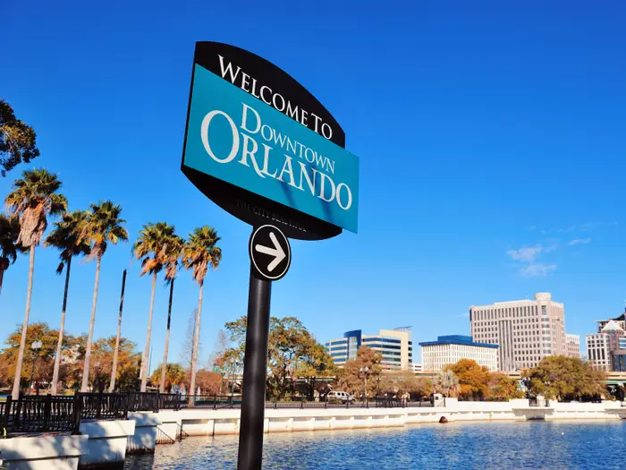
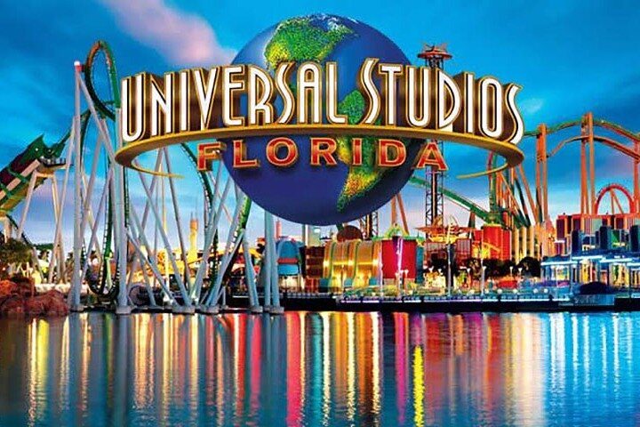
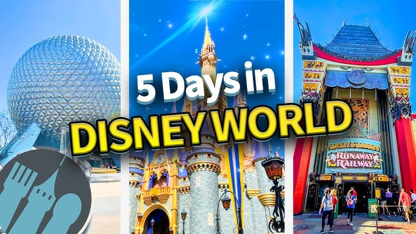
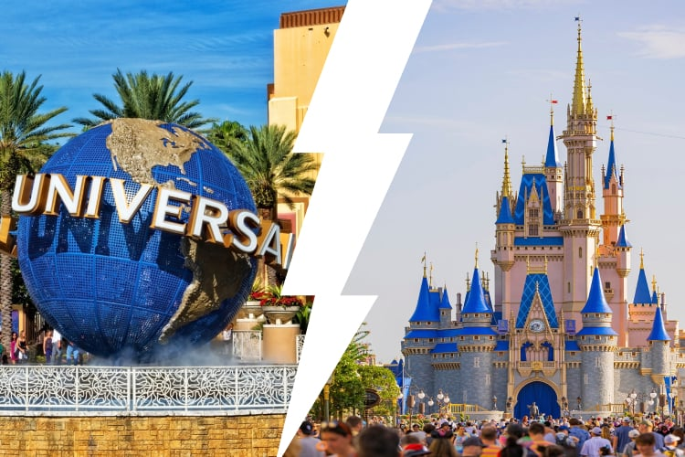

Tổng quan:
🚗Bằng ô tô (chuyến đi đường bộ) phù hợp nhất cho du lịch gia đình, sự linh hoạt, các điểm dừng ngắm cảnh
- Quãng đường: ~850 dặm
- Thời gian: ~12–13 giờ không ngừng nghỉ
- Lộ trình gợi ý: I-95 S qua Richmond → Fayetteville → Savannah → Orlando Dừng qua đêm ở điểm giữa (ví dụ: Savannah, GA hoặc Jacksonville, FL)
✈️ Bằng máy bay (Khuyến khích vì sự tiện lợi)
- Từ: DCA (Reagan) / IAD (Dulles) / BWI Đến: MCO (Sân bay Quốc tế Orlando)
- Thời gian bay: ~2,5 giờ
- Hãng hàng không: Southwest, JetBlue, Spirit, Delta, American
- Mẹo: Đặt vé máy bay khứ hồi sớm để tiết kiệm!

Điểm đến nổi bật ở Orlando, Florida
Chọn những điểm tham quan hàng đầu của bạn và mua trực tuyến để tiết kiệm thời gian/tiền bạc
- Universal Studios & Islands of Adventure
- Disney World (Magic Kingdom, EPCOT, v.v.)
- SeaWorld Orlando
- ICON Park (Vòng đu quay Ferris, thủy cung)
- Trung tâm Vũ trụ Kennedy (Mũi Canaveral – cách 1 giờ lái xe)

🏨 Khách sạn ở Orlando, Florida
Các khu vực nên ở :
- International Drive (I-Drive): Nhà hàng, mua sắm, dễ dàng đến các công viên
- Hồ Buena Vista: Gần các công viên Disney
- Kissimmee: Khách sạn và khu nghỉ dưỡng giá cả phải chăng
Khách sạn được đề xuất (Tất cả đều có hồ bơi):
- Holiday Inn Resort Orlando Suites – Công viên nước
- Floridays Resort Orlando
- Rosen Shingle Creek
- Khu nghỉ dưỡng Wyndham Orlando International Drive

Lịch trình 5 ngày ở Orlando
🗓️ Ngày 1: Di chuyển và đến Orlando
- Nhận phòng khách sạn/khu nghỉ dưỡng
- Thư giãn tại hồ bơi khách sạn hoặc khám phá I-Drive
- Ăn tối tại ICON Park hoặc nhà hàng địa phương
- Đến sớm (mở cửa khoảng 9 giờ sáng).
- Các trò chơi: Thế giới nhỏ bé, Cướp biển vùng Caribbean, Space Mountain Diễu hành + Pháo hoa vào ban đêm Mẹo: Sử dụng Disney Genie+ để giảm thời gian chờ

🗓️ Ngày 3:Universal Studios Florida
- Thế giới phù thủy của Harry Potter
- Kẻ trộm mặt trăng, Người máy biến hình, Hollywood Rip Ride Rockit
- Bữa tối tại Universal CityWalk
🗓️ Ngày 4: SeaWorld hay Trung tâm Vũ trụ Kennedy
- SeaWorld: Trò chơi: Mako, Manta, Hành trình đến Atlantis
- Chương trình: Gặp gỡ cá heo, cá voi sát thủ
- Trung tâm Vũ trụ Kennedy (cách 1 giờ lái xe): Tàu con thoi Atlantis Gặp gỡ phi hành gia
🗓️ Ngày 5: Mua sắm + Trả phòng
- Premium Outlets hoặc The Florida Mall
- Trả phòng và về nhà
- Trả xe hoặc đi sân bay

📝 Gợi ý khi du lịch ở Orlando, Florida
- Giấy tờ du lịch (CMND/hộ chiếu cho chuyến bay)
- Bộ sạc di động
- Kem chống nắng, mũ, áo choàng (mưa mùa hè rất phổ biến)
- Bình nước có thể tái sử dụng
- 📲 Ứng dụng hữu ích tim kiem ve trải nghiệm Disney của tôi
- Khu nghỉ dưỡng Universal Orlando
- Google Maps / Waze